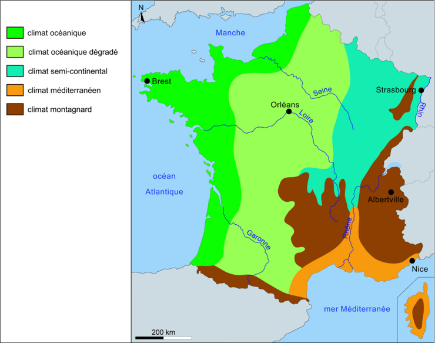
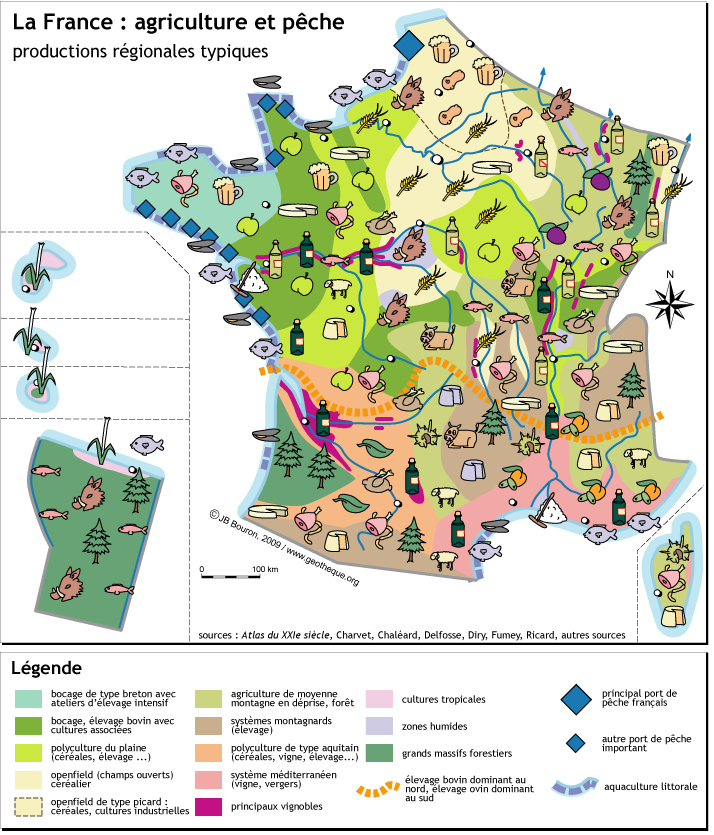
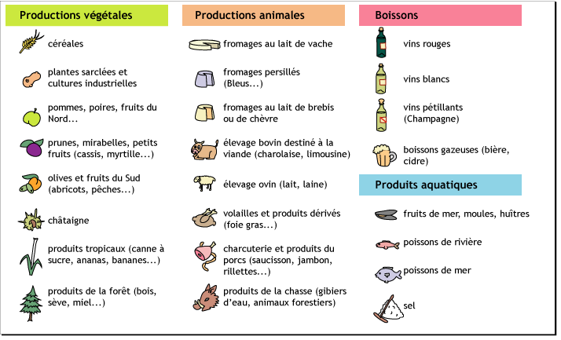
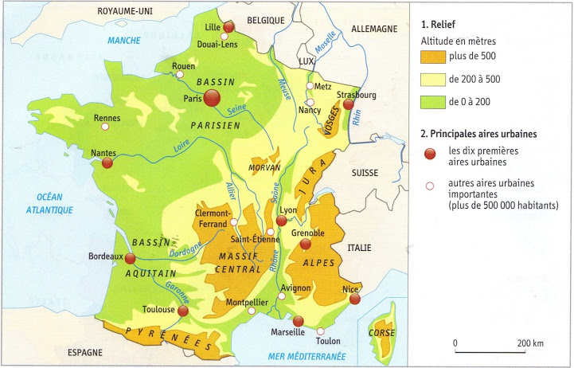
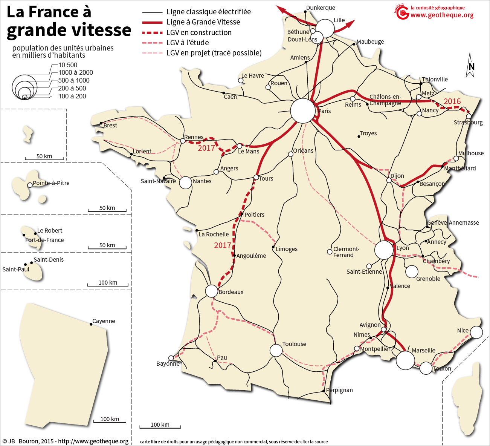

MACLASSE.COM

La France représente une superficie de 551 500km2. Elle s'étend de 1 000km du Nord au Sud et d'Est en Ouest. Ce qui fait de lui le troisième pays plus grand d'Europe. La France possède quatre façades maritimes, avec une longueure totale des côtes de 3 427km. Ses frontières naturelles sont le Rhin, les Alpes, le Jura et les Pyrénées.
Jusqu'en 2015, nous avions 27 régions administratives. Depuis le 1er Janvier 2016 elles sont au nombre de 18 : Bretagne, Normandie, Hauts-De-France, Grand Est, Ile-de-France, Centre Val de Loire, Bourgogne Franche-Comté, Auvergne Rhône-Alpes, Provence Alpes Cotes-d'Azur, Occitanie, Nouvelle-Aquitaine, Pays de La Loire, Corse, La Réunion, Mayotte, Guyanne, Martinique, Guadeloupe.


Nous avons également 101 départements en France. Il s'agit d'un découpage administratif de second niveau. Chaque département appartient à une région. 96 (de 1 à 95 avec la Corse 2A et 2B mais qui prend le numéro 20) départements en France métropolitaine et 5 départements en Outre mer et DOM (971 - 972 ...976).

L'altitude est l'élevation d'un point par rapport au niveau de la mer. Ainsi en France elle varie de - 4 m à + 4 810 m. Ce qui donne une altitude moyenne de 344 m pour le territoire.
Le relief de la France se caractérise par sa forme en "S". Il démarre des Vosges, descend dans la vallée du Rhônes puis longe sur l'ouest le sud du Massif Central et le nord des Pyrénées.


En plus d'avoir de nombreuses côtes du nord au sud (la mer du Nord, la Manche, l'Océan Atlantique et la mer Méditerrannée). Le pays possède de nombreux cours d'eau. Avec comme plus long cours d'eau la Loire (1 012 km).
Quelques définitions afin de ne pas se tromper :
- Cours d'eau: écoulement d'eau qui part d'un lieu (la source) pour aller vers un autre (l'embouchure)
- Ruisseau: petit cours d'eau, ni très large ni très grand.
- Rivière: cours d'eau moyen recevant de l'eau d'un autre cours d'eau et allant se jeter dans un cours d'eau plus important
- Fleuve: cours d'eau important, très grands et se faisant alimenter par de nombreux cours d'eau. Il se jette le plus souvent dans la Mer
- Mers: grande étenue d'eau salée qui peut être fermée.
- Océans: très grande étendue d'eau salée qui sépare les continents.

Au niveau hydrologique, la France occupe une place puissante en Europe. Son climat fait que les précipitations y sont élevées afin d'alimenter les cours d'eau. On peut compter 5 fleuves en France. L'homme a aménagé ses fleuves afin d'en tirer un maximum profit. Nous y retrouvons plusieurs activités comme le transport de marchandises, la production d'énergie avec la construction de barrages et enfin pour y faire du tourisme.
La France se compose de différents climat : Océanique (hiver assez doux et été assez frais, les pluies sont fréquentes), Océanique dégradé (comme l'océanique mais du a son éloignement de la cote, les pluies y sont plus rare), continental (on appel cela un climat d'abri, les hivers sont plus durs et les étés sont chauds), Méditerranéen (les pluies sont irrégulières et peu fréquentes, il y a de la sécheresse en été) et enfin le climat Montagnard (les pluies sont plus nombreuses et les températures varient selon l'altitude).
Ainsi avec sa situation géographique et ses différents climats, la France profite d'une multitudes de ressources. Cela va de la pêche à la production agricole qui varient selon les régions.
 Au 1er Janvier 2018, la population française est estimé à 67,2 millions (65 millions en france métropolitaine et 2,2 millions dans les départements et régiosn d'outre-mer). Nous pouvons nous apercevoir que la répartition de la population n'est pas égal. Les montagnes, les plaines le centre de la France et le sud-ouest ont une faible densité. Ainsi Paris reste la ville ou il y a le plus de monde suivis de Marseilles, Lyon et Toulouse.
En France, le moyen de transport le plus utilisé reste la route avec quasiment 1,1 millions de km de routes. Le pays est également doté de 2 grands aéroports (Roissy Charles De Gaulle et Orly), les aéroports de provinces sont en concurrence avec le réseau ferré (métro, train TGV etc ). Enfin le trafic maritime est important aussi avec ses deux grands ports que sont Marseilles et Calais.

Mentions légales / Qui sommes-nous ? / Plan du site
Nos matières : français - mathématiques - histoire - sciences - arts visuels - geographie